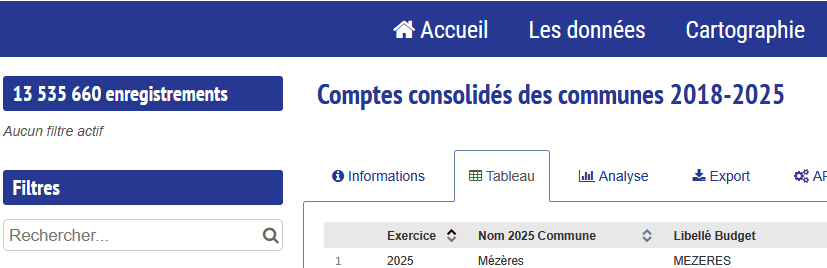
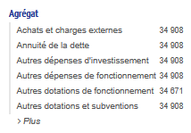
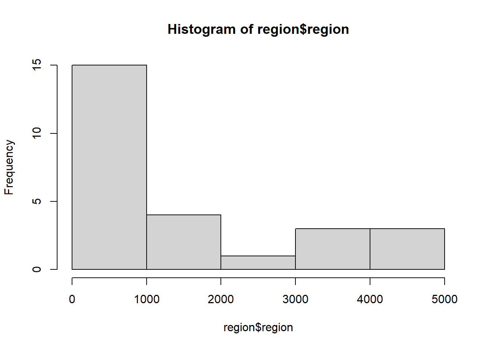
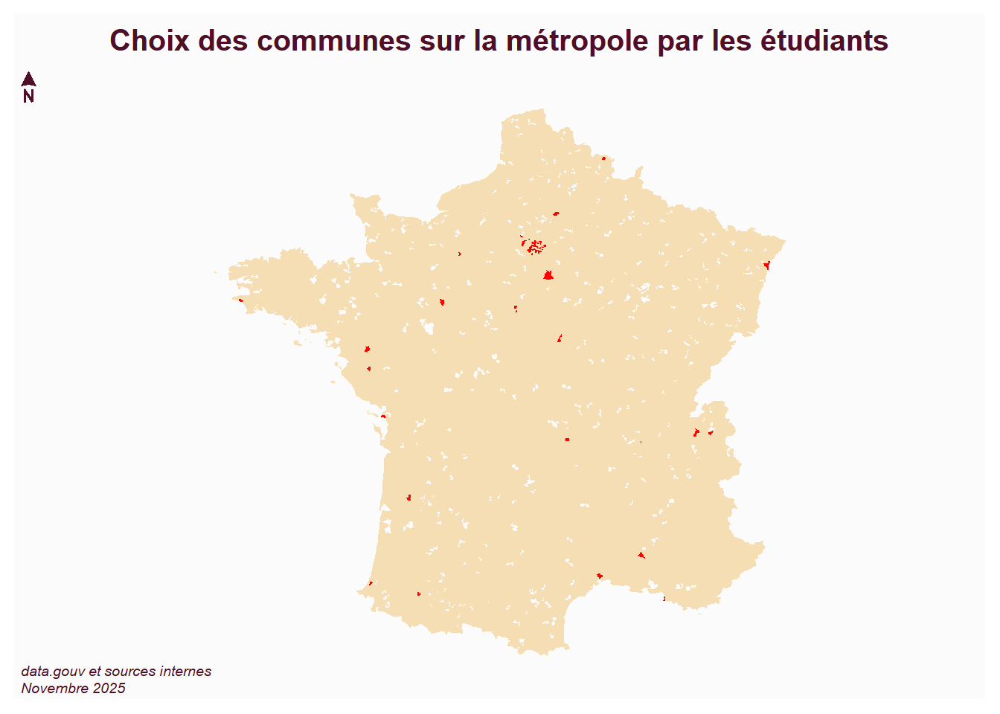
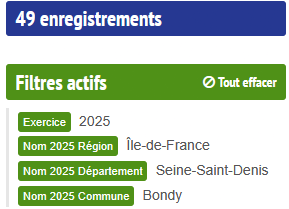
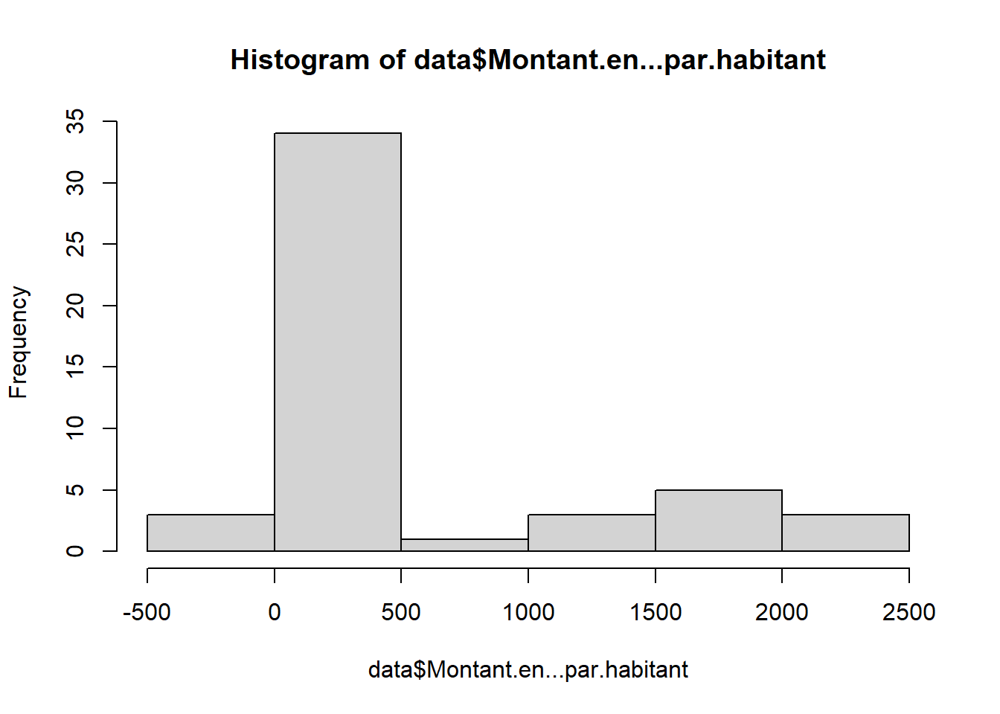
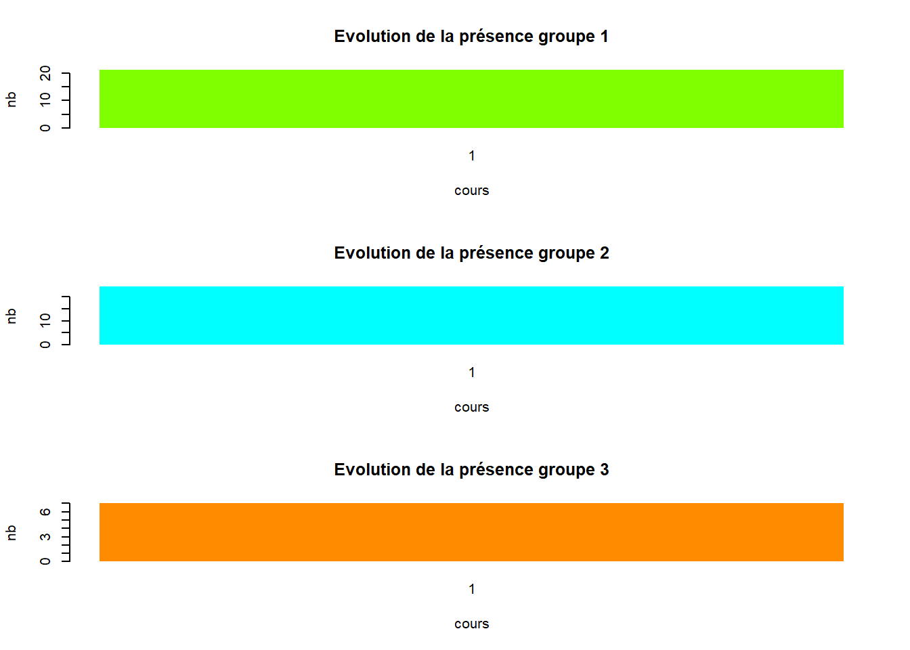
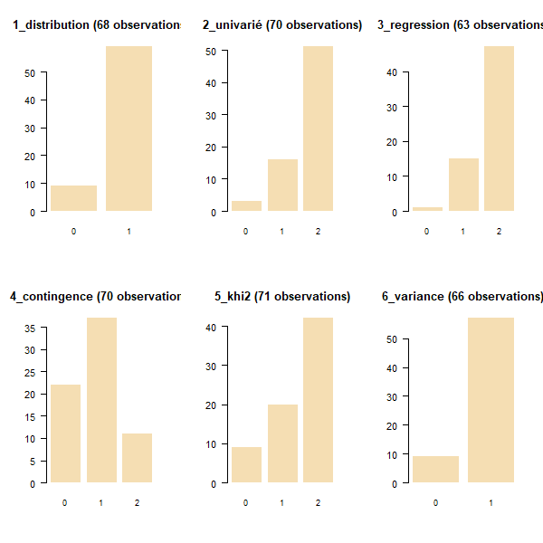
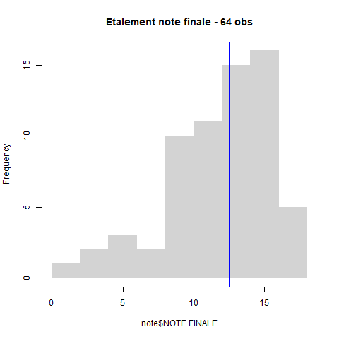

Introduction
1 Intitulé et déroulé du cours
“L5GEABIM Analyses bivariées et multivariées”
| num.cours | Date.gr.1.et.2 | date.gr.3 | thème | outil | exercice.nb.pts |
|---|---|---|---|---|---|
| 1 | 21.09.26 | 18.09.26 | statistique univariée base | tableur | 1 |
| 2 | 28.09.26 | 25.09.26 | statistique univariée indicateurs | 2 | |
| 3 | 05.10.26 | 02.10.26 | bivariée : base + régression début | 2 | |
| 4 | 12.10.26 | 09.10.26 | régression fin + khi début (tableau de contingence) | 2 | |
| 5 | 19.10.26 | 16.10.26 | Khi2 + devoir gr 1 et 2 en guise de cours 1 | 2 | |
| NA | 26.10.26 | 23.10.26 | CONGES gr 1 et 2 / initiation R gr 3 | R | NA |
| 6 | 02.11.26 | 30.10.26 | initiation R gr 1 et 2 / CONGES gr 3 | NA | |
| 7 | 09.11.26 | 06.11.26 | initiation R / boite à moustaches | 1 | |
| 8 | 16.11.26 | 13.11.26 | initiation R / variance + sujet DM | NA | |
| 9 | 23.11.26 | 20.11.26 | multivariée : boucle R et mise en forme des données (part 1 – régression multiple) | NA | |
| 10 | 30.11.26 | 27.11.26 | multivariée : régression multiple (part 2) et script analyse factorielle et classification | NA | |
| 11 | 07.12.26 | 04.12.26 | multivariée : analyse factorielle et classification (données centrées réduites) | NA | |
| 12 | 14.12.26 | 11.12.26 | questions autour du devoir maison et confirmation groupe partiel | NA | |
| 13 | 18.12.26 | révision gr3 (feuille révisions gr 1 et 2) | NA | ||
| 14 | à préciser | à préciser | partiel | NA |
Comptes des villes et élections municipales : quels sont les liens ?
2 La donnée
2.1 Où la trouver ?
Data.gouv, portail externe voire portail cartographique
2.1.1 Data.gouv
définir avec wikipedia, que retenir par rapport à l’IA ?
apprendre à chercher :
les élections (que préciser ?)
les finances des communes (mot clé compte des communes)
2.1.2 Le portail externe
Trouver la source originale pour les comptes des communes et apprendre à utiliser cet outil plutôt que le fichier de data.gouv
car : 23 millions d’observations au total, un fichier de 6 G°de données
2.1.3 Portail cartographique
Utiliser l’outil proposé par l’OFGL
Quel est l’apport de la cartographie ?
2.2 Extraire la donnée à partir du portail externe
Explication des différents filtres
2.2.0.1 Choix de base : compte consolidé et année
- compte consolidé

- pour le premier cours, ne pas faire de choix d’agrégat

savoir distinguer investissement et fonctionnement
dans quelle catégorie classer les frais de personnel ?
2.2.0.2 Un choix géographique différent par étudiant
lieu <- read.csv("data/etudiant.csv")
lieu <- unique(lieu$code.insee.commune.choisie)
lieu <- lieu [!is.na(lieu)]
library(sf)## Linking to GEOS 3.14.1, GDAL 3.12.1, PROJ 9.7.1; sf_use_s2() is TRUE## Reading layer `communes-1000m' from data source
## `C:\Users\forma\01_stat\data\gros\communes-1000m.geojson' using driver `GeoJSON'
## Simple feature collection with 35014 features and 7 fields
## Geometry type: MULTIPOLYGON
## Dimension: XY
## Bounding box: xmin: -178.182 ymin: -85.05 xmax: 168.133 ymax: 51.089
## Geodetic CRS: WGS 84communes <- communes [st_is_valid(communes),]
region <- aggregate(communes [,c("region")], by = list(communes$region), length)
data <- communes [communes$code %in% lieu,]
table(data$departement, data$region)##
## 01 02 11 24 27 28 32 44 52 53 75 76 84 93
## 13 0 0 0 0 0 0 0 0 0 0 0 0 0 1
## 17 0 0 0 0 0 0 0 0 0 0 1 0 0 0
## 29 0 0 0 0 0 0 0 0 0 1 0 0 0 0
## 33 0 0 0 0 0 0 0 0 0 0 1 0 0 0
## 34 0 0 0 0 0 0 0 0 0 0 0 1 0 0
## 44 0 0 0 0 0 0 0 0 1 0 0 0 0 0
## 45 0 0 0 1 0 0 0 0 0 0 0 0 0 0
## 58 0 0 0 0 1 0 0 0 0 0 0 0 0 0
## 59 0 0 0 0 0 0 1 0 0 0 0 0 0 0
## 60 0 0 0 0 0 0 1 0 0 0 0 0 0 0
## 61 0 0 0 0 0 1 0 0 0 0 0 0 0 0
## 63 0 0 0 0 0 0 0 0 0 0 0 0 1 0
## 64 0 0 0 0 0 0 0 0 0 0 2 0 0 0
## 67 0 0 0 0 0 0 0 1 0 0 0 0 0 0
## 69 0 0 0 0 0 0 0 0 0 0 0 0 1 0
## 72 0 0 0 0 0 0 0 0 1 0 0 0 0 0
## 74 0 0 0 0 0 0 0 0 0 0 0 0 2 0
## 75 0 0 9 0 0 0 0 0 0 0 0 0 0 0
## 77 0 0 2 0 0 0 0 0 0 0 0 0 0 0
## 78 0 0 1 0 0 0 0 0 0 0 0 0 0 0
## 84 0 0 0 0 0 0 0 0 0 0 0 0 0 1
## 85 0 0 0 0 0 0 0 0 1 0 0 0 0 0
## 92 0 0 11 0 0 0 0 0 0 0 0 0 0 0
## 93 0 0 7 0 0 0 0 0 0 0 0 0 0 0
## 94 0 0 9 0 0 0 0 0 0 0 0 0 0 0
## 95 0 0 2 0 0 0 0 0 0 0 0 0 0 0
## 971 1 0 0 0 0 0 0 0 0 0 0 0 0 0
## 972 0 1 0 0 0 0 0 0 0 0 0 0 0 0
met <- region [region$region > 900,]
mf_map(met, col = "wheat", border = NA)
mf_map(data, col= "red", add = T, border = NA)
mf_layout("Choix des communes sur la métropole par les étudiants", "data.gouv et sources internes\nNovembre 2025")
## The scale bar cannot be displayed on unprojected (long/lat) maps.Deux étudiants ont fait un choix hors métropole
horsMet <- data [data$departement %in% c(971,972),]
mf_init(st_buffer(horsMet,20000))
mf_map(region, col = "wheat", border = NA, add = T)
mf_map(data, col= "red", add = T, border = NA)
mf_layout("Choix des communes hors métropole par 2 étudiants", "data.gouv et sources internes\nNovembre 2025")
## The scale bar cannot be displayed on unprojected (long/lat) maps.Enregistrement de la donnée
## Deleting layer `data' using driver `GPKG'
## Writing layer `data' to data source `data/data.gpkg' using driver `GPKG'
## Writing 64 features with 7 fields and geometry type Multi Polygon.2.2.0.3 Choix pour le cours
Le cours sera basé sur la commune de Bondy et le département du 93 (1967 enregistrements pour tous les agrégats)

A noter, sélectionner la région permet de choisir plus facilement le département 93
## [1] "Exercice"
## [2] "Outre.mer"
## [3] "Code.Insee.2025.Région"
## [4] "Nom.2025.Région"
## [5] "Code.Insee.2025.Département"
## [6] "Nom.2025.Département"
## [7] "Code.Siren.2025.EPCI"
## [8] "Nom.2025.EPCI"
## [9] "Strate.population.2025"
## [10] "Commune.rurale"
## [11] "Commune.de.montagne"
## [12] "Commune.touristique"
## [13] "Tranche.revenu.par.habitant"
## [14] "Présence.QPV"
## [15] "Code.Insee.2025.Commune"
## [16] "Nom.2025.Commune"
## [17] "Catégorie"
## [18] "Code.Siren.Collectivité"
## [19] "Code.Insee.Collectivité"
## [20] "Libellé.Budget"
## [21] "Agrégat"
## [22] "Montant.BP"
## [23] "Montant.BA"
## [24] "Montant.flux.BP.BA"
## [25] "Montant"
## [26] "Montant.en.millions"
## [27] "Population.totale"
## [28] "Montant.en...par.habitant"
## [29] "Compte.2025.Disponible"
## [30] "ordre_analyse1_section1"
## [31] "ordre_analyse1_section2"
## [32] "ordre_analyse1_section3"
## [33] "ordre_analyse2_section1"
## [34] "ordre_analyse2_section2"
## [35] "ordre_analyse2_section3"
## [36] "ordre_analyse3_section1"
## [37] "ordre_analyse3_section2"
## [38] "ordre_analyse3_section3"
## [39] "ordre_analyse4_section1"
## [40] "annee_join"
## [41] "Population.totale.du.dernier.exercice"## Exercice Outre.mer Code.Insee.2025.Région Nom.2025.Région
## 1 2025 Non 11 Île-de-France
## 2 2025 Non 11 Île-de-France
## 3 2025 Non 11 Île-de-France
## 4 2025 Non 11 Île-de-France
## 5 2025 Non 11 Île-de-France
## 6 2025 Non 11 Île-de-France
## Code.Insee.2025.Département Nom.2025.Département Code.Siren.2025.EPCI
## 1 93 Seine-Saint-Denis 200057875
## 2 93 Seine-Saint-Denis 200057875
## 3 93 Seine-Saint-Denis 200057875
## 4 93 Seine-Saint-Denis 200057875
## 5 93 Seine-Saint-Denis 200057875
## 6 93 Seine-Saint-Denis 200057875
## Nom.2025.EPCI Strate.population.2025 Commune.rurale Commune.de.montagne
## 1 Est Ensemble 9 Non Non
## 2 Est Ensemble 9 Non Non
## 3 Est Ensemble 9 Non Non
## 4 Est Ensemble 9 Non Non
## 5 Est Ensemble 9 Non Non
## 6 Est Ensemble 9 Non Non
## Commune.touristique Tranche.revenu.par.habitant Présence.QPV
## 1 Non 1 Oui
## 2 Non 1 Oui
## 3 Non 1 Oui
## 4 Non 1 Oui
## 5 Non 1 Oui
## 6 Non 1 Oui
## Code.Insee.2025.Commune Nom.2025.Commune Catégorie Code.Siren.Collectivité
## 1 93010 Bondy Commune 219300100
## 2 93010 Bondy Commune 219300100
## 3 93010 Bondy Commune 219300100
## 4 93010 Bondy Commune 219300100
## 5 93010 Bondy Commune 219300100
## 6 93010 Bondy Commune 219300100
## Code.Insee.Collectivité Libellé.Budget Agrégat
## 1 93010 BONDY Dépôts au Trésor
## 2 93010 BONDY Dépenses d'intervention
## 3 93010 BONDY Dépenses d'investissement hors remb
## 4 93010 BONDY Dépenses de fonctionnement
## 5 93010 BONDY Impôts locaux
## 6 93010 BONDY Recettes de fonctionnement
## Montant.BP Montant.BA Montant.flux.BP.BA Montant Montant.en.millions
## 1 19636834 0 0 19636834 19.636834
## 2 5322354 0 0 5322354 5.322354
## 3 12639966 0 0 12639966 12.639966
## 4 82353832 0 0 82353832 82.353832
## 5 53089924 0 0 53089924 53.089924
## 6 95956845 0 0 95956845 95.956845
## Population.totale Montant.en...par.habitant Compte.2025.Disponible
## 1 51239 383.2400 1
## 2 51239 103.8731 1
## 3 51239 246.6864 1
## 4 51239 1607.2490 1
## 5 51239 1036.1233 1
## 6 51239 1872.7306 1
## ordre_analyse1_section1 ordre_analyse1_section2 ordre_analyse1_section3
## 1 NA NA NA
## 2 NA NA NA
## 3 NA 5 NA
## 4 NA 4 NA
## 5 NA NA NA
## 6 4 NA NA
## ordre_analyse2_section1 ordre_analyse2_section2 ordre_analyse2_section3
## 1 NA NA NA
## 2 NA 4 NA
## 3 NA NA NA
## 4 NA 1 2
## 5 NA NA NA
## 6 1 NA 1
## ordre_analyse3_section1 ordre_analyse3_section2 ordre_analyse3_section3
## 1 NA NA NA
## 2 NA NA NA
## 3 NA 1 1
## 4 NA NA NA
## 5 NA NA NA
## 6 NA NA NA
## ordre_analyse4_section1 annee_join Population.totale.du.dernier.exercice
## 1 2 2025 51239
## 2 NA 2025 51239
## 3 NA 2025 51239
## 4 NA 2025 51239
## 5 NA 2025 51239
## 6 NA 2025 51239## 'data.frame': 49 obs. of 41 variables:
## $ Exercice : int 2025 2025 2025 2025 2025 2025 2025 2025 2025 2025 ...
## $ Outre.mer : chr "Non" "Non" "Non" "Non" ...
## $ Code.Insee.2025.Région : int 11 11 11 11 11 11 11 11 11 11 ...
## $ Nom.2025.Région : chr "Île-de-France" "Île-de-France" "Île-de-France" "Île-de-France" ...
## $ Code.Insee.2025.Département : int 93 93 93 93 93 93 93 93 93 93 ...
## $ Nom.2025.Département : chr "Seine-Saint-Denis" "Seine-Saint-Denis" "Seine-Saint-Denis" "Seine-Saint-Denis" ...
## $ Code.Siren.2025.EPCI : int 200057875 200057875 200057875 200057875 200057875 200057875 200057875 200057875 200057875 200057875 ...
## $ Nom.2025.EPCI : chr "Est Ensemble" "Est Ensemble" "Est Ensemble" "Est Ensemble" ...
## $ Strate.population.2025 : int 9 9 9 9 9 9 9 9 9 9 ...
## $ Commune.rurale : chr "Non" "Non" "Non" "Non" ...
## $ Commune.de.montagne : chr "Non" "Non" "Non" "Non" ...
## $ Commune.touristique : chr "Non" "Non" "Non" "Non" ...
## $ Tranche.revenu.par.habitant : int 1 1 1 1 1 1 1 1 1 1 ...
## $ Présence.QPV : chr "Oui" "Oui" "Oui" "Oui" ...
## $ Code.Insee.2025.Commune : int 93010 93010 93010 93010 93010 93010 93010 93010 93010 93010 ...
## $ Nom.2025.Commune : chr "Bondy" "Bondy" "Bondy" "Bondy" ...
## $ Catégorie : chr "Commune" "Commune" "Commune" "Commune" ...
## $ Code.Siren.Collectivité : int 219300100 219300100 219300100 219300100 219300100 219300100 219300100 219300100 219300100 219300100 ...
## $ Code.Insee.Collectivité : int 93010 93010 93010 93010 93010 93010 93010 93010 93010 93010 ...
## $ Libellé.Budget : chr "BONDY" "BONDY" "BONDY" "BONDY" ...
## $ Agrégat : chr "Dépôts au Trésor" "Dépenses d'intervention" "Dépenses d'investissement hors remb" "Dépenses de fonctionnement" ...
## $ Montant.BP : num 19636834 5322354 12639966 82353832 53089924 ...
## $ Montant.BA : num 0 0 0 0 0 0 0 0 0 0 ...
## $ Montant.flux.BP.BA : num 0 0 0 0 0 0 0 0 0 0 ...
## $ Montant : num 19636834 5322354 12639966 82353832 53089924 ...
## $ Montant.en.millions : num 19.64 5.32 12.64 82.35 53.09 ...
## $ Population.totale : int 51239 51239 51239 51239 51239 51239 51239 51239 51239 51239 ...
## $ Montant.en...par.habitant : num 383 104 247 1607 1036 ...
## $ Compte.2025.Disponible : int 1 1 1 1 1 1 1 1 1 1 ...
## $ ordre_analyse1_section1 : int NA NA NA NA NA 4 NA NA NA NA ...
## $ ordre_analyse1_section2 : int NA NA 5 4 NA NA NA NA NA NA ...
## $ ordre_analyse1_section3 : int NA NA NA NA NA NA NA NA NA NA ...
## $ ordre_analyse2_section1 : int NA NA NA NA NA 1 NA NA NA NA ...
## $ ordre_analyse2_section2 : int NA 4 NA 1 NA NA NA NA 3 NA ...
## $ ordre_analyse2_section3 : int NA NA NA 2 NA 1 NA NA NA NA ...
## $ ordre_analyse3_section1 : int NA NA NA NA NA NA NA NA NA NA ...
## $ ordre_analyse3_section2 : int NA NA 1 NA NA NA NA NA NA 2 ...
## $ ordre_analyse3_section3 : int NA NA 1 NA NA NA NA NA NA NA ...
## $ ordre_analyse4_section1 : int 2 NA NA NA NA NA NA NA NA NA ...
## $ annee_join : int 2025 2025 2025 2025 2025 2025 2025 2025 2025 2025 ...
## $ Population.totale.du.dernier.exercice: int 51239 51239 51239 51239 51239 51239 51239 51239 51239 51239 ...##
## 93010
## 49## Agrégat Montant.en...par.habitant
## 1 Dépôts au Trésor 383.2400
## 2 Dépenses d'intervention 103.8731
## 3 Dépenses d'investissement hors remb 246.6864
## 4 Dépenses de fonctionnement 1607.2490
## 5 Impôts locaux 1036.1233
## 6 Recettes de fonctionnement 1872.7306# sauvegarde de la donnée
write.csv(data [,c(21,28)], "data/agregat.csv", fileEncoding = "UTF-8")
# Les agrégats ont-ils tous la même importance ?
hist(data$Montant.en...par.habitant)
3 Présentation rapide (vous êtes nombreux !)
3.1 Qui sont les étudiants ?
- 84 étudiants inscrits sur 3 cours (70 présents environ)
Les questions posées sont sur le passé / présent / futur des étudiants, leur appétence en stats
etudiant <- read.csv("data/TD3_stats_2025.csv", fileEncoding = "UTF-8")
etudiant2 <- read.csv("data/tdLundi.csv", fileEncoding = "UTF-8")
names(etudiant)## [1] "prenom" "adresse.mail"
## [3] "groupe" "appetence"
## [5] "code.insee.commune.choisie" "passé"
## [7] "futur"## [1] "X"
## [2] "adresse.mail"
## [3] "groupe"
## [4] "appetence.stats..1...4..un.peu..passionnément."
## [5] "code.insee.commune.choisie"
## [6] "passé"
## [7] "présent"
## [8] "futur"names(etudiant2)[1] <- 'prenom'
names(etudiant2)[4] <- 'appetence'
etudiant2 <- etudiant2 [, names(etudiant)]
etudiant <- rbind(etudiant, etudiant2)
etudiant <- etudiant [!is.na(etudiant$prenom),]
table(etudiant$groupe, useNA = "always")##
## 1 2 3 <NA>
## 29 31 21 5etudiant <- read.csv("data/etudiantModifie.csv", fileEncoding = "UTF-8")
png("img/quisontils.png", width = 10000, height = 10000, res=1000)
#par(mar = c(2,16,2,4))
par(mfrow = c(2,2))
for (i in c(3,4,6,7)){
(mar = c(2,30,2,4))
barplot(table(etudiant [,i]), border = NA,
horiz = T, las = 2, cex.names = 0.8,
main = names (etudiant) [i])
}
dev.off()## png
## 2
3.2 Présence et rendu des devoirs : chiffres clés
3.2.1 Effectif et cours
| Cours | TD1 | TD2 | TD3 |
|---|---|---|---|
| C1 | 30 | 31 | 22 |
| C2 | 22 | 25 | 24 |
| C3 | 23 | 27 | 19 |
| C4 | 19 | 29 | 13 |
| C5 | 25 | 23 | 18 |
| C6 | 17 | 17 | 19 |
| C7 | 15 | 19 | 25 |
| C8 | 15 | 25 | 12 |
| C9 | 15 | 22 | 23 |
| C10 | 17 | 17 | 4 |
| C11 | 9 | 18 | 13 |
| C12 | NA | NA | NA |
| C13 | NA | NA | NA |
presence$numCours <-as.numeric(substring(presence$Cours,2,3))
par(mfrow = c(3,1))
barplot(presence$TD1~presence$numCours, col="chartreuse", beside = T, main = "Evolution de la présence groupe 1", xlab = "cours", ylab = "nb"
, border = NA, legend = F)
barplot(presence$TD2~presence$numCours, col = "cyan", beside = T, main = "Evolution de la présence groupe 2", xlab = "cours", ylab = "nb"
, border = NA, legend = F)
barplot(presence$TD3~presence$numCours, col="darkorange",beside = T, main = "Evolution de la présence groupe 3", xlab = "cours", ylab = "nb"
, border = NA, legend = F)
3.2.2 Les rendus d’exercices
Attention, les exercices sont à rendre 2 jours avant le cours (temps de la correction),
gr 3 : mercredi 20 h
gr 1 et 2 : vendredi 20 h
Aucun retard toléré
data <- read.csv("data/notesDM1_7.csv", na.strings = "-", fileEncoding = "UTF-8")
data <- data [, c(7:12)]
names(data)## [1] "Devoir.MAISON.2...Valeurs.centrales.et.dispersion..Brut."
## [2] "Devoir.MAISON.4...contingence.agrégats.communes..Brut."
## [3] "Devoir.MAISON.5...khi2..Brut."
## [4] "Devoir.MAISON.3...régression.entre.2.agrégats.financiers..Brut."
## [5] "Devoir.MAISON.1...Dénombrement..Brut."
## [6] "Devoir.MAISON.7...boite.à.moustaches..Brut."data <- data [, c(5,1,4,2,3,6)]
titre <- c("1_distribution", "2_univarié", "3_regression", "4_contingence", "5_khi2", "6_variance")
png("img/rendu.png", width = 600, height = 600, res = 100)
par( mfrow = c(2,3))
tot <- length(data)
i <-1
for (i in c(1:tot)){
tmp <- table(data [,i])
barplot(tmp, cex.names = 0.8, las = 1,
main = paste0(titre [i], " (", sum(tmp), " observations)"), border = NA, col = "wheat")
}
dev.off()## png
## 2
- Le critère externe : des points faciles ?
le nom du fichier
le temps du rendu (avant la limite)
- Augmentation des erreurs avec l’exercice 4
Attention à la consigne !
3.3 Notes finales
note <- read.csv("data/noteFinales.csv", fileEncoding = "UTF-8", na.strings = c("EN ATTENTE", "NA","-"), dec = ",")
summary(note)
png("img/noteFin.png")
hist(note$NOTE.FINALE, main = "Etalement note finale - 64 obs", freq = T, border = NA)
abline(v = mean(note$NOTE.FINALE, na.rm = T), col = "red")
abline(v = median(note$NOTE.FINALE, na.rm=T), col = "blue")
dev.off()
4 Ressources autre que la bibliographie officielle
Pour R, la base de tout est
R et espace (https://archives.framabook.org/r-et-espace/index.html)
L5GEABIM Analyses bivariées et multivariées